Some of the projects that I have built to gain experience. You can
check the source code.
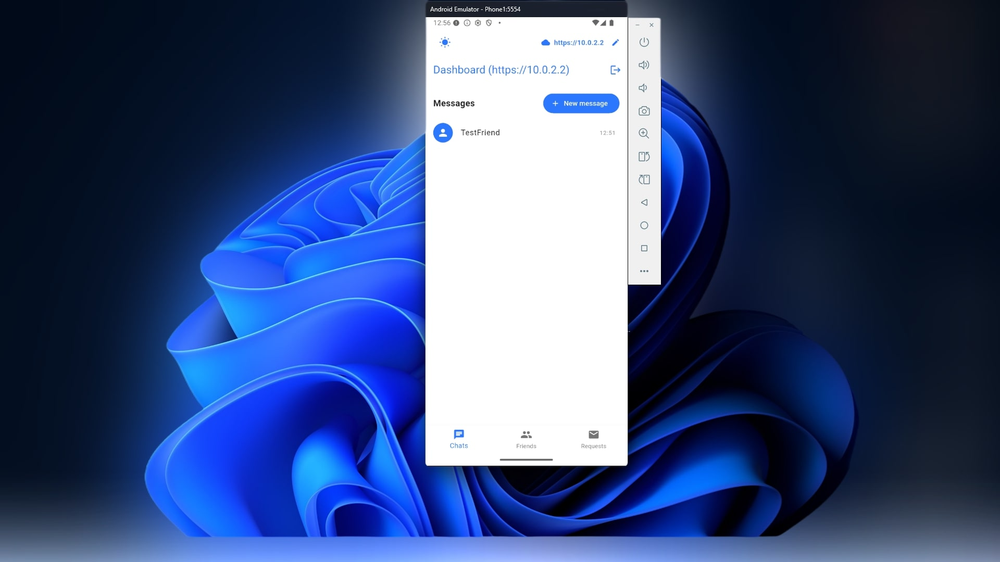
Private Chat
Docker, Go, Flutter, PostgreSQL, Redis, React
A mobile-first, end-to-end encrypted messaging app with a stateless, scalable WebSocket backend written
in Go, using Redis for presence + message relay, PostgreSQL for persistence, and Docker for deployment.
The project is self-hostable: you run your own backend server and distribute the Android APK to clients.
Github
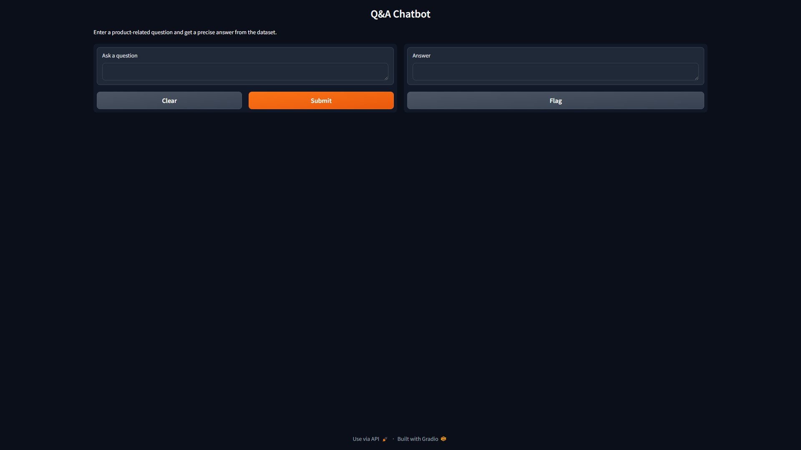
AI Data Pipeline
Python, Docker, Ollama, Gradio
A data pipeline that processes PDF files to generate Q&A-style JSON data using DeepSeek-R1:7B
(compatible with most Ollama models). This pipeline is complemented by a retrieval-based system that
efficiently searches the generated data to provide accurate answers to user queries.
Github
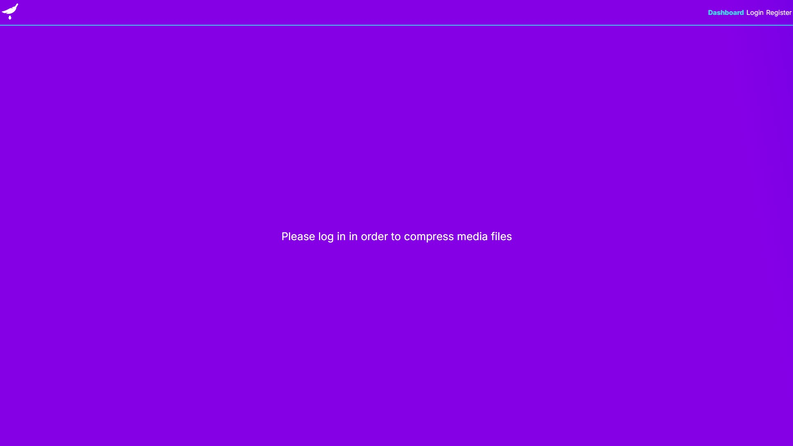
File compression and storage
Spring Boot, FastAPI, Next.js, Docker, MYSQL, MongoDB, MinIO
A simple media compression and storage app. Where users can compress images or videos and save them.
This project doesn't use email verification. You can register your own account with any email looking
format, or if you would like to use an already pre-made account. Username is superAdmin with the
password
password.
Github
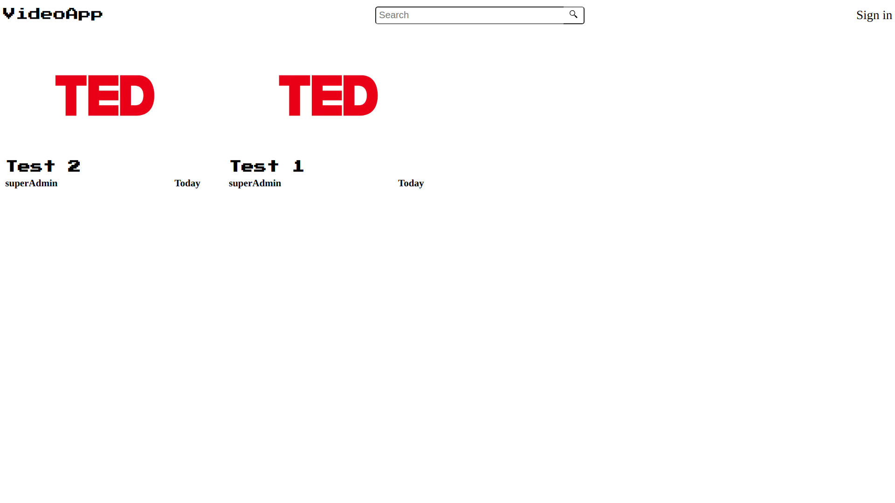
VideoApp
Spring Boot, React, MYSQL
A simple video sharing app that lets users upload their own videos, watch uploaded videos from other
users and add comments to said videos. As well as CRUD operations for comments, user profiles and
videos.
This project doesn't use email verification. You can register your own account with any email looking
format, or if you would like to use an already pre-made account. Username is superAdmin with the
password
password.
Github
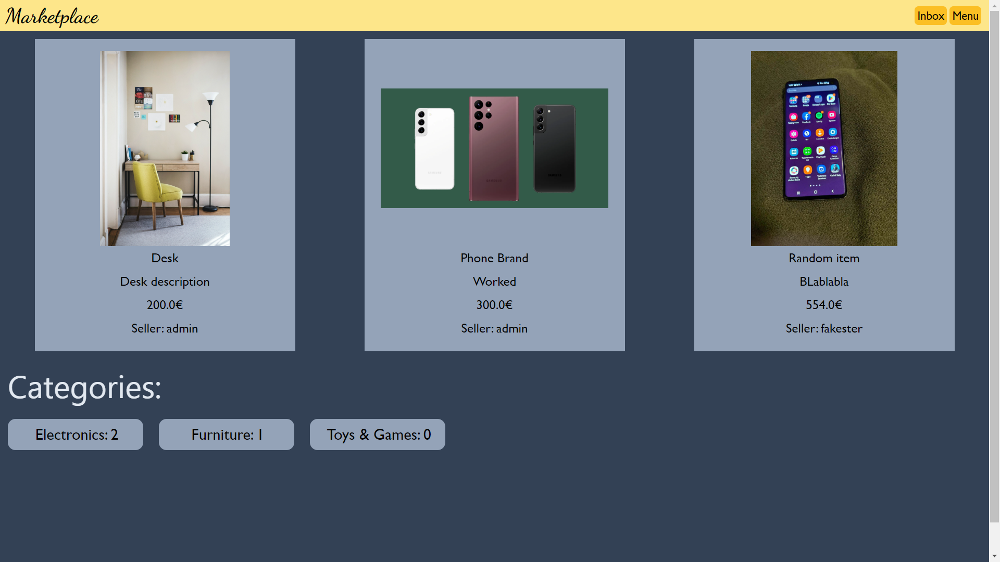
Marketplace
Django, Tailwind CSS
A simple marketplace app build with Django and Tailwind CSS, which allows its users to create, edit and
delete item listings as well as communicate with each other over said items.
This project doesn't use email verification. You can register your own account with any email looking
format, or if you would like to use an already pre-made account. Username is fakester with the password
StrongPassword97.
Github
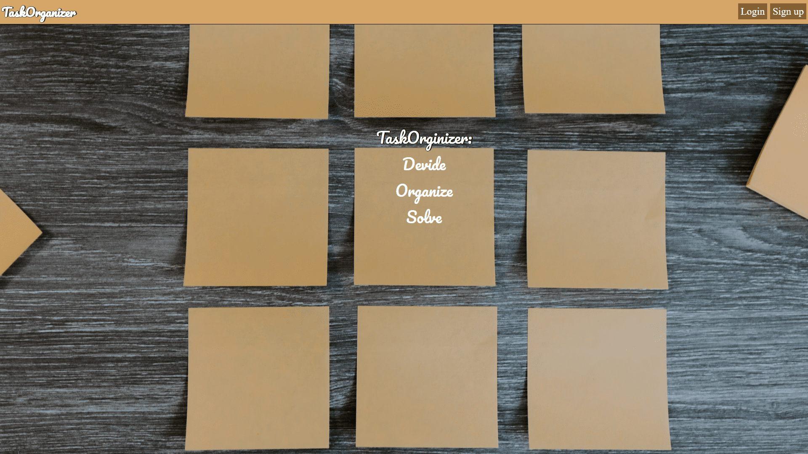
Task Organizer
Angular, Laravel, MySQL, Pusher, Lint
Task Organizer, a web application build with the intent of
helping to break up complex projects in small chunks. Using
the Kanban method, users can easily create and organize goals
for a fast and smooth problem solving experience. Built with
Angular on the front-end and served with Laravel for the
backend. Implementing a Pusher web socket for instantaneous
group chat and updates on the tasks.
This project uses email verification. If you want to test the
email verification portion you would need an inbox,
https://temp-mail.org/en/ is an excellent service for that, or
if you would like to use an already pre-made account. Email is
kokopo2155@leupus.com with the password Tester97!.
Github
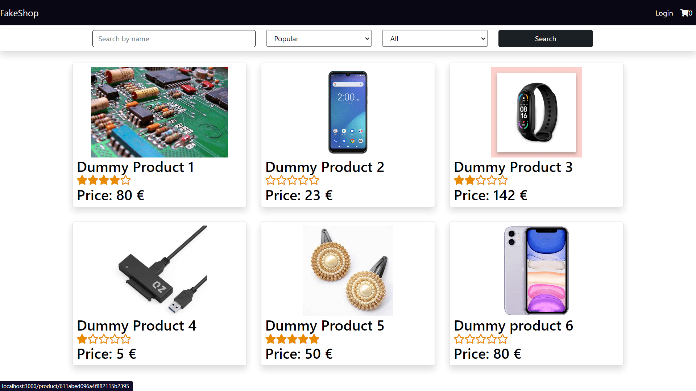
FakeShop
React, Bootstrap, Redux, Express, MongoDB
A MERN stack E-Commerce website meant for small businesses.
Having an internet presence can lead to a boost in sales, and
every business no matter it's size should have one. That's why
I've built this amazon like e-commerce website which allows
buyers to leave feedback and ratings on the sold products, a
sandbox payment system with Stripe and an admin profile, so
the owner can edit, delete or create new products which are
sold.
This project dosen't use email authentication so you can enter
a fake email in the registration form, or if you would preffer
to see the the site from the owner's perspective you can use
this account email admin@gmail.com password FakePassword
Github
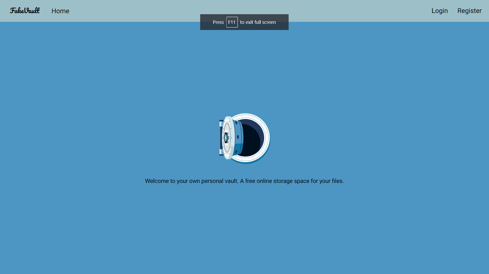
FakeVault
Angular, Angular material, Laravel, MySQL, React native
The idea behind FakeVault is a file storage/sharing platform
inspired by google drive with the option of alloriwng other
users to download said files
This project dosen't use email authentication so you can enter
a fake email in the registration form or use the accout. Email
is faker@hotmail.com with the password Tester97!
Github
front-end
Github
back-end
Android app
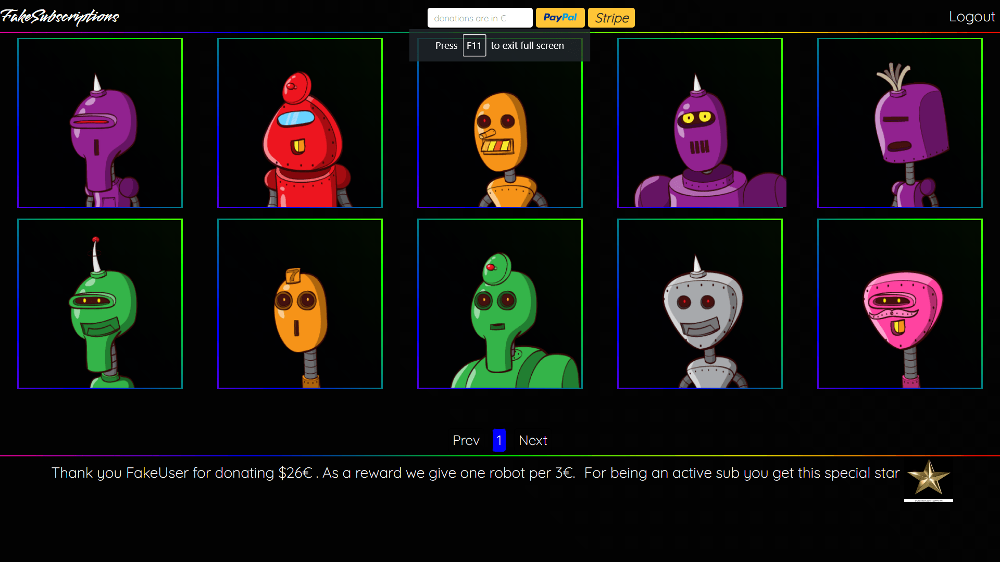
FakeSubscriptions
React, Express, MongoDB
The idea behind FakeSubscriptions is to build a MERN stack
subscription based website that rewards its users based on if
they are currently an active donor, and by the total amount of
money donated. The purpose of building this was to teach
myself about proper authentication and security combined with
implementing two of the internet's most famous online payments
systems Paypal and Stripe.
If you want to test the email verification portion you would
need an inbox, https://temp-mail.org/en/ is an excellent
service for that, or if you would like to use an already
pre-made account. Email is faker@hotmail.com with the password
Tester97!.
Github
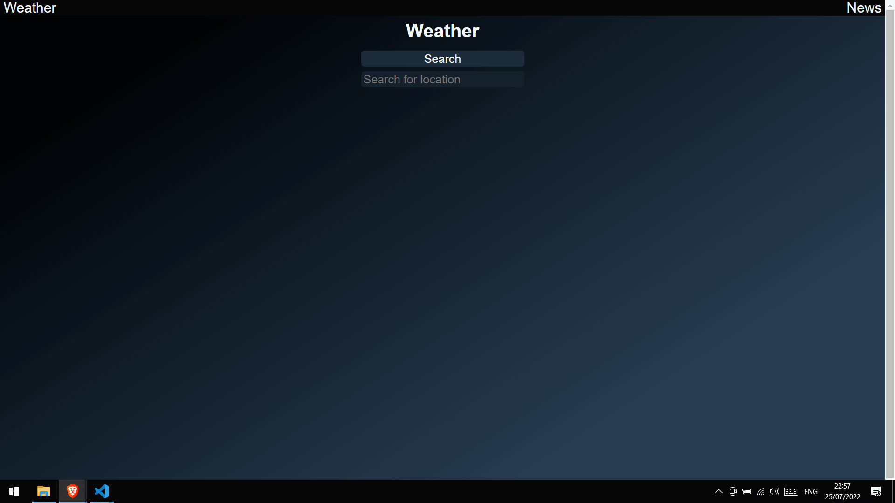
Weather and news app
Vue.js
The classical weather and news application. The perfect chance
to build a small project to with the purpose of familiarizing
myself with the basics of Vue.js. Uses the famous Open
weather API and the News API to deliver recent forecast and
news articles with a built with autocomplete for some of
Europe's most populated cities.
Github

VideoChat App
Angular, Nestjs, SocketIo, Nx, MongoDB
A video chat app (work in progress), built with Angular on the
front-end and NestJS on the back-end.
Github
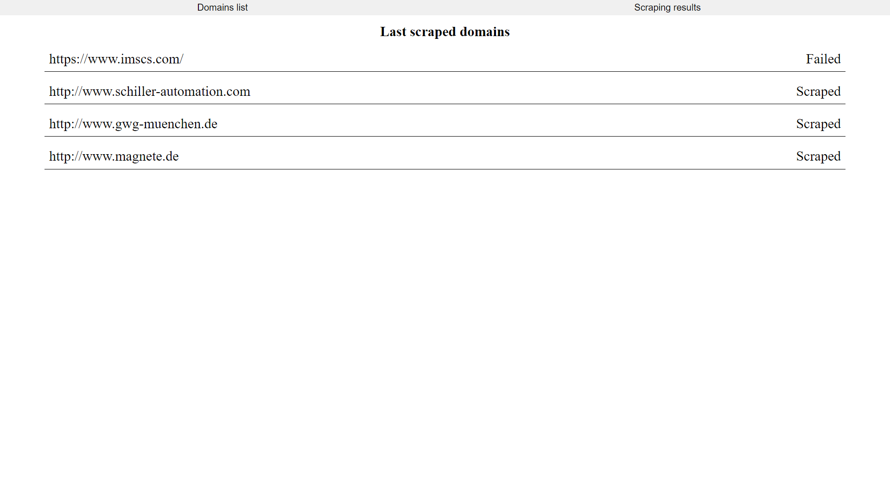
Contact Scraper
Node, Express, puppeteer
A basic web scraper which attempts to scrape emails and phone
numbers from provided domains.
Note: This project uses chrome, you might need to edit the
executablePath variable in the getHTML function inside
fetchingFunctions.js in the utils directory, or remove it all
together to use the inbuilt chromium that comes with
puppeteer.
Github
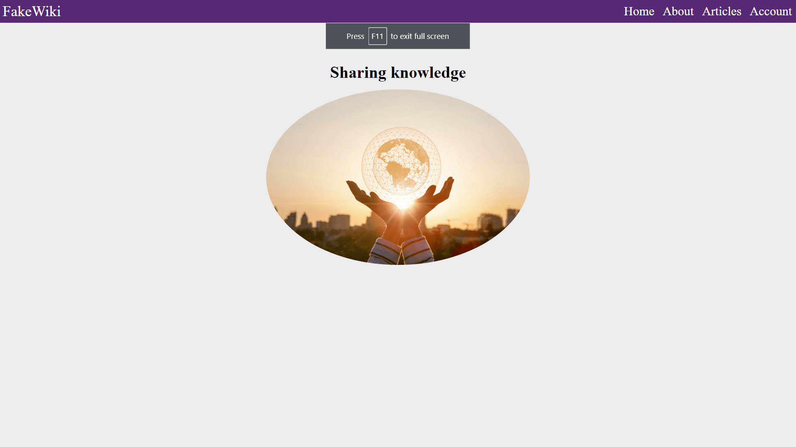
FakeWiki
React, Express, MongoDB
A small MERN stack basic CURD Wikipedia type project where
users can post articles. It started out being similar to
Wikipedia but with the addition of user roles such as admins
and moderators, so there would be order and users can't just
post what they want.
This project dosen't use email authentication so you can enter
a fake email in the registration form, or if you would preffer
to see the the site from an admin's perspective you can use
this account email admin@hotmail.com password Admin123
Github